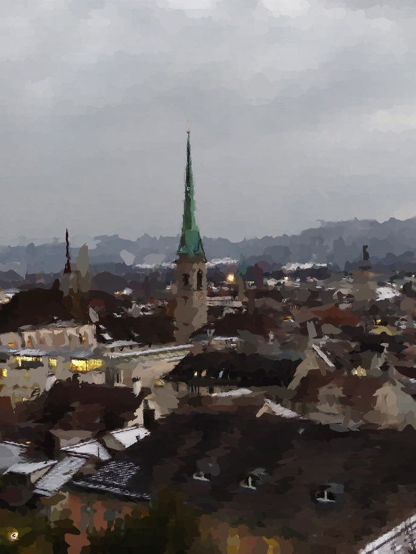

Mingyang
Song
Ph.D. Student between DisneyResearch|Studios & ETH Zürich.
- Dynamic scene reconstruction & compression
- Video denoising
- Digital camera noise modeling

Selected Projects

SmoothMotionVectors
Optimizing your content for video codecs in free-view video compression. A compressed 4D Gaussian scene, decoded and rasterized entirely in your browser — no GPU, no install.
Spline Deformation Field
To reconstruct dynamic scenes from images, we revisit classic splines and blend them with modern coordinate neural networks. This fusion combines the best of both, achieving smoother temporal transitions and better spatial coherence.


Digital Camera Noise Synthesis
A generative model for real sensor noise, distilled down to two measured ingredients — an intensity-to-variance curve and a spatial correlation kernel. Regrain your own photographs as five smartphones across fourteen ISO levels.
TempFormer
A video denoiser reads five frames and returns three, then slides along. Two windows end up pouring the same frame, they disagree, and the video flickers. Turn the propagation and the Overlap Loss on and off, and watch the seam close.
